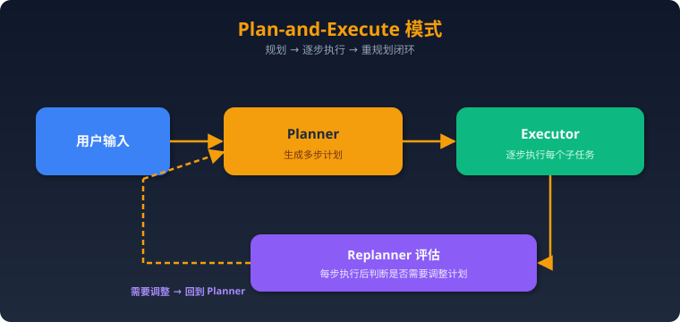

LangChain & LangGraph 深度解析与面试题
一、LangChain 核心架构
模块体系
LangChain
├── Models（模型层）
│ ├── LLMs（文本生成）
│ ├── Chat Models（对话模型）
│ └── Embedding Models（嵌入模型）
├── Prompts（提示层）
│ ├── PromptTemplate
│ ├── ChatPromptTemplate
│ └── FewShotPromptTemplate
├── Chains（链）
│ ├── LLMChain（基础链）
│ ├── SequentialChain（顺序链）
│ ├── RouterChain（路由链）
│ └── LCEL（LangChain Expression Language）
├── Agents（代理）
│ ├── ReAct Agent
│ ├── OpenAI Functions Agent
│ └── Plan-and-Execute Agent
├── Memory（记忆）
│ ├── ConversationBufferMemory
│ ├── ConversationSummaryMemory
│ └── ConversationTokenBufferMemory
├── Tools（工具）
│ ├── Search, Calculator, Code Interpreter...
│ └── 自定义 Tool
└── Retrievers（检索器）
├── VectorStoreRetriever
├── MultiQueryRetriever
└── SelfQueryRetriever
LCEL（LangChain Expression Language）
- LangChain 的现代链构建方式
- 用管道操作符
|连接组件 - 支持流式输出、批处理、异步
- 示例：
prompt | llm | output_parser
Agent 类型
- ReAct：推理+行动交替，最经典
- OpenAI Functions：利用 OpenAI 函数调用能力
- Plan-and-Execute：先规划再执行，适合复杂任务
- Tool Calling Agent：通用工具调用（新版推荐）
二、LangGraph 深度解析
核心概念
from langgraph.graph import StateGraph, END
# 1. 定义状态
class AgentState(TypedDict):
messages: list
next_step: str
# 2. 创建图
graph = StateGraph(AgentState)
# 3. 添加节点（每个节点是一个函数）
graph.add_node("agent", agent_node)
graph.add_node("tool", tool_node)
# 4. 添加边（定义流转）
graph.add_edge("agent", "tool") # 无条件边
graph.add_conditional_edges("tool", router) # 条件边
# 5. 设置入口
graph.set_entry_point("agent")
# 6. 编译运行
app = graph.compile()
result = app.invoke({"messages": [...]})
关键特性详解
1. 状态管理
- 每次节点执行都会更新全局 State
- State 在整个图执行期间持久化
- 支持 Checkpointing：可以保存/恢复执行状态
- 支持 Time Travel：回到任意历史检查点
2. 条件边（Conditional Edges）
def router(state):
if state["need_tool"]:
return "tool_node"
return END
graph.add_conditional_edges("agent", router, {
"tool_node": "tool_node",
END: END
})
3. 人工干预（Human-in-the-loop）
- 在关键节点前暂停，等待人工审批
interrupt_before/interrupt_after参数- 适用场景：敏感操作确认、Agent 决策审核
4. 多 Agent 协作模式
- Supervisor 模式：一个主 Agent 调度多个子 Agent
- 对等模式：Agent 间直接通信
- 层级模式：多层管理结构
LangGraph vs LangChain Agent
| 维度 | LangChain Agent | LangGraph |
|---|---|---|
| 工作流 | 线性/简单分支 | 任意图结构 |
| 状态管理 | 基本 Memory | 丰富 State + Checkpoint |
| 循环 | 不支持 | 原生支持 |
| 人工干预 | 有限 | 完善 |
| 多 Agent | 简单嵌套 | 原生支持 |
| 学习曲线 | 低 | 中等 |
| 生产就绪 | 中等 | 高 |
三、实战设计模式
1. ReAct Loop（最基础的 Agent 循环）
用户输入 → Agent 推理 → 是否需要工具？
├── 是 → 调用工具 → 获取结果 → 回到 Agent 推理
└── 否 → 输出最终答案
2. Plan-and-Execute

3. Reflection（自我反思）
Agent 生成答案 → Critic 评估质量
├── 不满意 → Agent 重新生成（带反馈）
└── 满意 → 输出最终答案
4. Multi-Agent Supervisor
用户输入 → Supervisor Agent
├── 分派给 Research Agent
├── 分派给 Code Agent
└── 分派给 Writing Agent
→ 汇总结果 → 输出
四、高频面试题
LangChain
- LangChain 的核心模块有哪些？各自作用？
- 什么是 LCEL？相比传统 Chain 有什么优势？
- LangChain 中的 Memory 有哪几种？各自适用场景？
- 如何在 LangChain 中自定义 Tool？需要注意什么？
- ReAct Agent 的工作原理是什么？
LangGraph
- LangGraph 的图结构（Node, Edge, State）如何工作？
- 什么是条件边？如何实现分支逻辑？
- LangGraph 如何实现 Human-in-the-loop？
- LangGraph 的 Checkpoint 机制是什么？有什么用？
- 如何用 LangGraph 实现多 Agent 协作？描述 Supervisor 模式。
对比与选型
- LangChain 和 LangGraph 如何互补？举一个结合使用的例子。
- 你会在什么场景下选择 LangGraph 而不是 LangChain Agent？
- LangGraph vs CrewAI vs AutoGen，各自优劣？
- 如何调试和监控基于 LangGraph 的 Agent 应用？
- LangGraph 在生产环境中有哪些注意事项（错误处理、超时、成本控制）？
五、参考答案要点
Q5: ReAct Agent 工作原理
- ReAct = Reasoning + Acting
- 循环过程：Thought → Action → Observation → Thought → ...
- LLM 先"思考"当前状况，决定是否需要使用工具
- 如果需要：选择工具并提供参数 → 执行工具 → 观察结果
- 如果不需要：直接生成最终回答
- 核心 Prompt 格式包含 Thought/Action/Action Input/Observation
Q10: Supervisor 多 Agent 模式
- 一个 Supervisor Agent 负责任务调度
- 接收用户输入后，决定分派给哪个子 Agent
- 子 Agent 各自完成任务后将结果返回 Supervisor
- Supervisor 汇总结果，决定是否需要继续或输出最终答案
- LangGraph 实现：Supervisor 是一个条件节点，子 Agent 是独立节点
- State 中维护当前进度和各 Agent 的输出